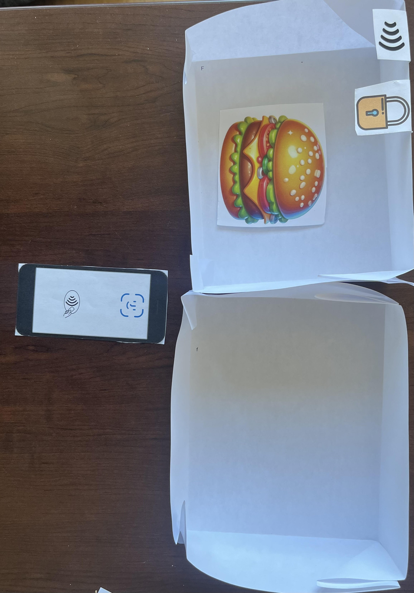
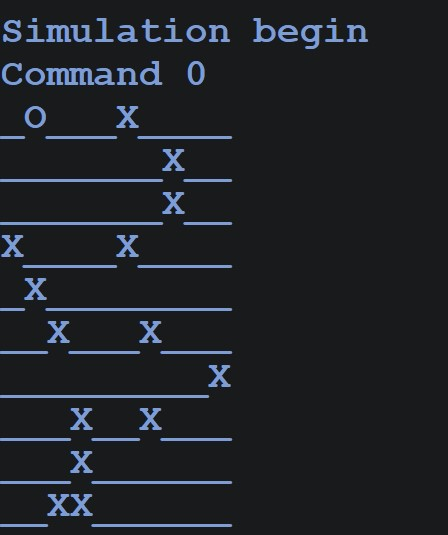
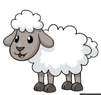
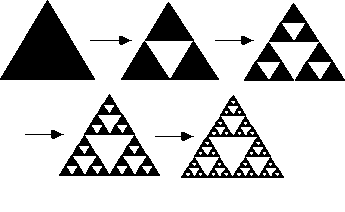

"Hey, I’m Ty, a computer science major with a passion for using code to create innovative solutions and impactful technology. My mission is to drive meaningful change by building smart, user-focused software that makes a difference. I’m excited to learn, grow, and connect with others as I pursue a career in technology."
Problem Statement

Food theft has become a significant concern, affecting peoples finances, disrupting daily routines, creating strain in relationships.
Prototype

An app that uses FaceID for secure access and pairs with RFID-enabled bins to unlock and manage stored food items. It ensures controlled access and real-time tracking for optimal food security and convenience.
TaskOrganizer

A task organizer ranks test orders by priority using a scoring system that evaluates factors like urgency, dependencies, and due dates.
TaskOrganizer

A robot simulator takes input commands (e.g., move, turn) to guide a test robot through a predefined course, tracking its position and actions.
SheepShearingScheduler

A program that generates a sheep-shearing schedule based on a provided file and a priority system. The schedule ensures that only one sheep is sheared at a time, while the others wait their turn. Waiting sheep are prioritized first by their shearing times (shorter times go first) and then alphabetically by name in case of ties. The sheep with the highest priority is always next in line for shearing.
SierpinskiTriangle

A program that draws a Sierpinski's Triangle, a triangular fractal, using recursion and Java Swing. The program repeatedly divides triangles into smaller ones, creating a fractal pattern that gets more detailed with each recursive step.